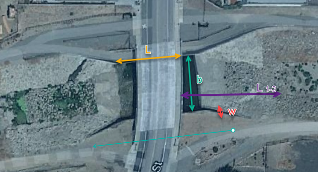
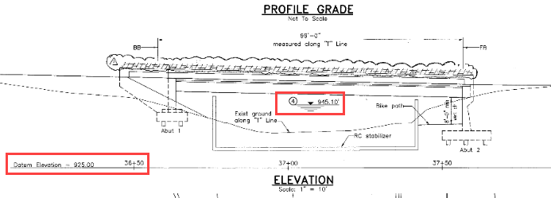
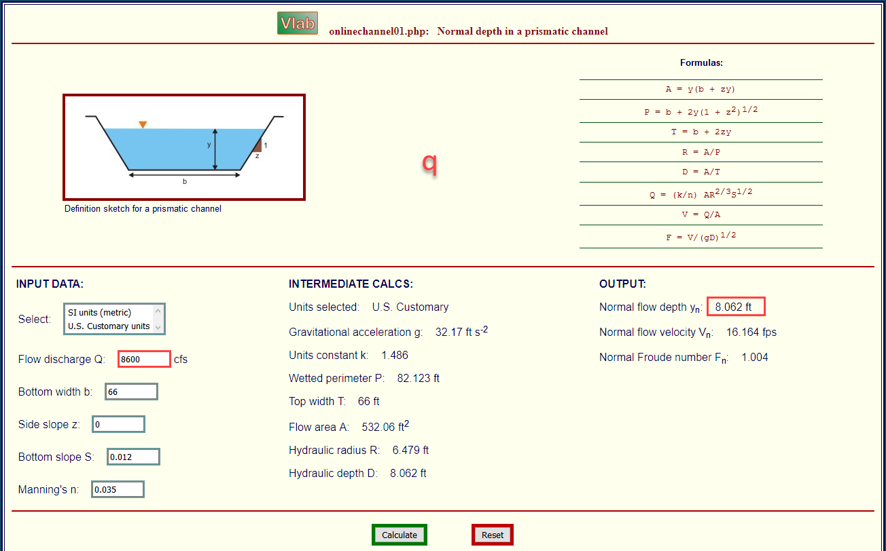
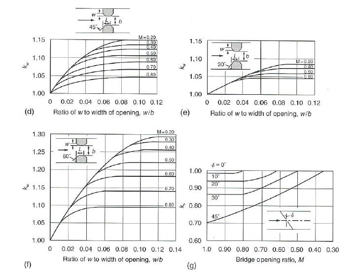
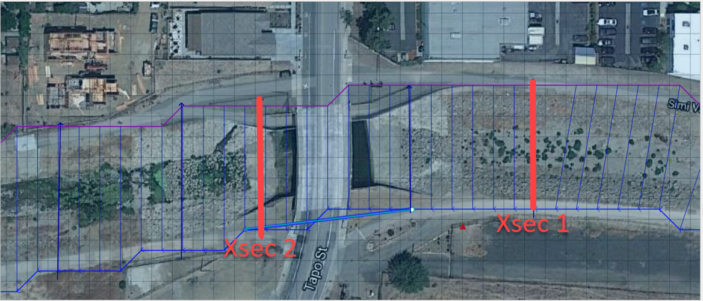
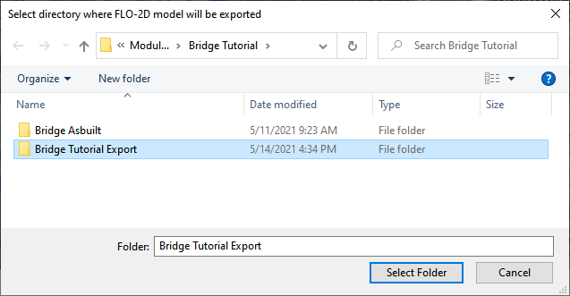
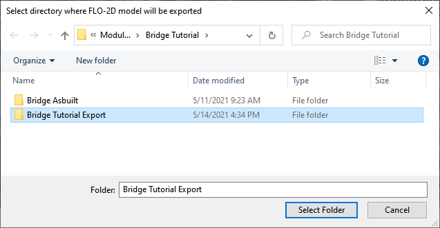

Bridge Hydraulic Structure#
Overview
In this tutorial, the bridge variables are added to a hydraulic structure.
Required Data
The required data is in Module 2 Bridge Tutorial. This is a new project. Please save and close the previous QGIS.
File |
Content |
|---|---|
*.qgz |
QGIS data files |
*.gpkg |
FLO-2D Geopackage |
*.tif |
Bridge asbuilt files |
*.DAT |
Bridge coefficients and cross sections |
Additional Resources:
Hamill, L., 1999. Bridge Hydraulics, E & FN Spon, NY. https://www.google.com/books/edition/Bridge_Hydraulics/e0VZDwAAQBAJ?hl=en&gbpv=0
Measurement of Peak Discharge at Width Contractions by Indirect Methods Howard F. Matthai https://pubs.er.usgs.gov/publication/twri03A4
Flow Through Openings in Width Constrictions JACOB DAVIDIAN, P. H. CARRIGAN, JR., and JOHN SHEN https://pubs.usgs.gov/wsp/1369d/report.pdf
Bridge Hydraulics Component Jimmy S. O’Brien See Tutorial Folder
Step 1: Load the project#
Start with the project from Module 2 Bridge Tutorial
If necessary, load it into QGIS. Open QGIS and drag the Bridge Tutorial.qgz file into the project.
Save the project.
Step 2: Define the bridge variables and coefficients#
Bridge variables and coefficients are defined by the USGS method for calculating discharge through a bridge. Hamill defines this approach in his book on bridge hydraulics (1999). O’Brien describes how to apply these variables to FLO-2D in a white paper called Bridge Hydraulics Component (2019). This tutorial will show how to estimate or calculate the required variables for a real project setup.
This bridge in Simi Valley, CA crosses Arroyo Simi at Tapo St. It appears to have vertical embankments and abutments.
Plan view parameters#
b = 66 ft measured from QGIS map
L = 70 ft measured from QGIS map
w = 5 ft measured from QGIS map
L1-2 = 177 ft measured from QGIS map
Profile parameters#
Z = 9.23 ft
Abutment left elevation = 941 ft
Abutment right elevation = 937.74
Average low chord = 937.4 ft
Average bridge deck elevation = 953.4 ft
Deck weir length = 114 ft
Bridge opening ratio#
Calculate M = q/Q = 0.83 = Discharge through bridge opening/pre-structure discharge)
q = 8600 cfs at normal depth = 8.06
Q = 10325 cfs at normal depth 8.06

Bridge tables#
This bridge is a Type I: Vertical embankments and abutments.
M =0.83 = q/Q = (8600/10325 calculated from sdsu open channel calc)
C’ = 0.94 derived from table a (L/b = 70/66 = 1.06, M = 0.83)
kF = 1.10 derived from table b (F calculated with open channel calc = 1.0)
kw = 1.05 derived from table e (w/b = 5/66 = 0.076)
kɸ = 1.00 derived from table g (angle = 10°)
Z = 9.23 ft (bridge low chord to channel bed)
Yu = 8.061 ft (normal depth upstream at 100yr discharge.)
No submergence at 100 yr discharge.

Type 1 Bridge Opening (from Hamill, 1999; p. 111, Figure 4.3)
Type 1 Bridge Opening cont. (from Hamill, 1999; p. 112, Figure 4.3)
Bridge variables dialog#
Fill the table from the preceding instructions.
Click ok to close this form.
Click the Schematize button on the Structure editor.

Step 3: Build the cross section data#
The cross section data for L1-2 is taken from the cross section table of Cross-Section-60 and the Bridge cross section estimated based on the geometry of the bridge.
X |
6657 |
|
|---|---|---|
0.00 |
957.08 |
954.11 |
4.00 |
957.15 |
953.48 |
10.01 |
957.16 |
952.04 |
20.02 |
954.13 |
949.50 |
22.02 |
953.38 |
944.24 |
28.03 |
950.24 |
942.80 |
32.04 |
948.06 |
940.84 |
38.04 |
945.23 |
938.81 |
42.05 |
943.70 |
937.43 |
46.05 |
942.41 |
937.30 |
50.06 |
942.23 |
937.31 |
62.07 |
941.52 |
937.26 |
70.08 |
941.74 |
937.31 |
78.09 |
944.95 |
937.26 |
84.09 |
948.11 |
937.23 |
86.10 |
948.47 |
937.34 |
88.10 |
949.16 |
937.69 |
94.11 |
951.27 |
939.68 |
102.12 |
955.43 |
942.52 |
110.12 |
956.13 |
945.75 |
112.13 |
955.87 |
945.87 |
118.13 |
955.86 |
948.39 |
120.14 |
955.90 |
954.00 |
Create a text file called BRIDGE_XSEC.DAT.
Copy the table above into the text file.
Replace the tabs with spaces using this method:
Select a tab.
Ctrl-H or Edit Replace
Add a few spaces into the Replace with field.
Click Replace All.
Save the file.
This file would normally be copied to the export folder but there is already one in there. This is just to show the procedure.

Step 4: Save, export and run#
This is a good point to save project.

Export the data files to the Project Folder in Module 2Bridge TutorialBridge Tutorial Export.
 


Click the Run FLO-2D Icon.
Correct the paths and click OK to start the simulation.